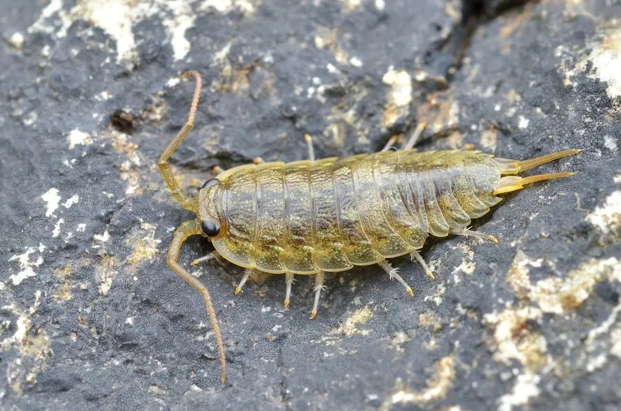

甲壳动物 · 动物界
海蟑螂 Ligia oceanica

生活在潮间带岩石上的大型等足类，外形像蟑螂，行动敏捷，受惊时迅速躲进石缝，以海藻和腐殖质为食。
- 分类
- 门节肢动物门纲软甲纲目等足目科海蟑螂科属海蟑螂属
- 栖息环境
- 潮间带上部的岩石、堤岸和码头缝隙
- 地理分布
- 东北大西洋沿岸，从挪威到地中海
- 保护级别
- 暂无评估
物种志
海蟑螂体长约 2–3 cm，身体扁平椭圆，呈灰褐或暗褐色，头部有一对长触角，足细长，尾部有尾肢，外形像一只蟑螂。它是甲壳动物而不是昆虫。
它生活在潮间带上部的岩石、堤岸和码头缝隙中，喜欢群集，行动敏捷，受惊时迅速躲藏。海蟑螂杂食，取食海藻、腐殖质、动物尸体和人类丢弃的食物，涨潮时躲进高位岩石的缝隙，退潮后出来活动。它分布于东北大西洋沿岸，从挪威到地中海都能见到。海蟑螂对潮间带环境适应良好，能在离开海水的情况下呼吸，但需要保持湿润；它对人类无害，是海岸生态系统中重要的分解者。它的体表能保持一层水膜，帮助它在空气中呼吸。
形态与习性
- 食性取食海藻、腐殖质、动物尸体和有机碎屑
- 体长约 2–3 cm
- 识别身体扁平，触角长，外形像蟑螂
- 习性群集在石缝中，行动敏捷，受惊迅速躲藏
- 适应可在离开海水的情况下呼吸，但需保持湿润
- 生态海岸生态系统的分解者，对人体无害
趣味知识
- 海蟑螂虽然名字里有蟑螂，其实是甲壳动物。
- 它跑得很快，一有动静就钻进石缝里。
- 海蟑螂以海藻和腐殖质为食，对人体没有危害。